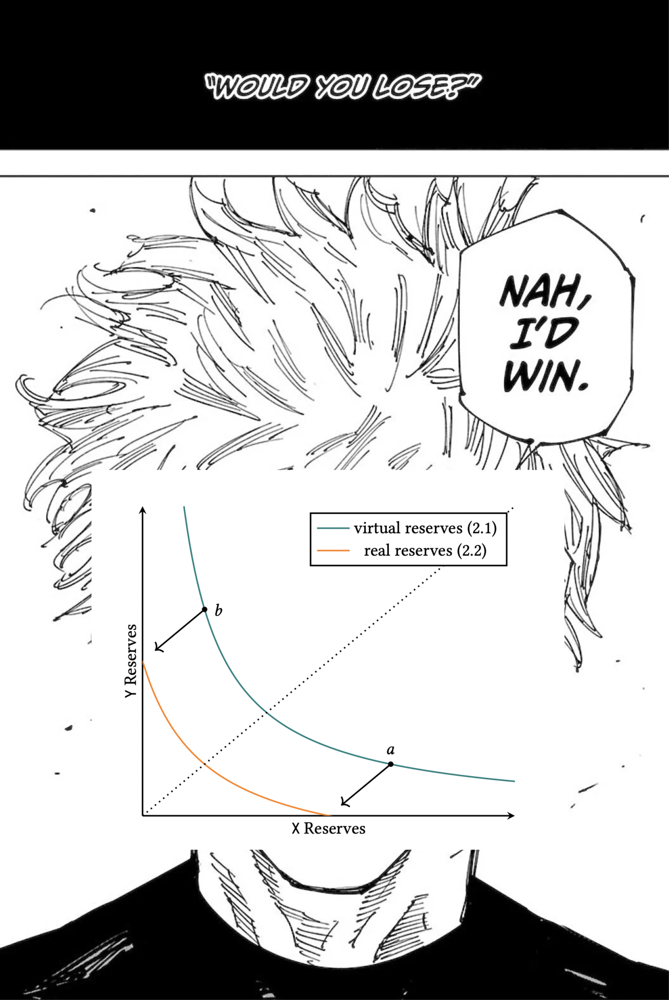

Why x*y = k?

If you asked me "why did uniswap catch on the way it did? why did xy = k win?" before v3 had dropped, the short answer would've been:
Well, it's a really simple exchange mechanism and it compute trades cheaply. LOBs aren't feasible onchain because of the exorbitant cost to put up orders as well as fill them. The curve it trades along has asymptotes at \(x = 0\) and \(y = 0\), which ensures the reserves of the AMM are never depleted. This means the mechanism can always act as a counterparty for all trades. The market making strategy it employs is pretty basic which makes it easy for retail to become LPs and also levels the playing field for retail and sophisticated players alike (h/t Parsec). As it spreads liquidity evenly across all prices, it avoids making directional bets on the risk or numeraire asset. This lack of optionality contributed to making it easy as pie to ape in as an LP.
V3 changed things when it came out with concentrated liquidity. Concentrated liquidity allowed LPs to provided liquidity within custom price ranges \([p_a, p_b]\) instead of spreading their liquidity over all possible prices, even ones which may never be reached. These positions can even be aggregated together efficiently into a "single" AMM, although it's best described as a collection of AMMs at certain ticks (buckets of prices).
Interestingly, the underlying curves in these ticks are still \(xy = k\) curves. This begs the question: is there more to why the team went with the same invariant again aside from its liveness and computational simplicity?
Although LPs are assumed to rationally provided liquidity at prices people want to trade on, to collect fees, it is possible for there to be no liquidity at certain prices meaning that always available to trade feature is now moot. Additionally, active liquidity provisioning makes competition stiff for LPs.
If it ain't broke, don't fix it is an obvious answer here, but it's not good enough for me.
Duality and Penumbra use constant price market makers (think Limit Orders) as their base curve which they then aggregate for users to trade on smoothly. Duality aggregates them similarly to V3, whereas Penumbra uses a routing algorithm that computes the optimal trade over the individual positions.
Gyroscope Finance came out with their own construction called a Constant Circle Market Maker, which also spreads liquidity across a range similarly to how V3 does it. However, their invariant is slightly more complicated and thus trades are more expensive to compute (it requires solving a quadratic equation). This makes it strictly worse than a V3 position, which is why you don't hear about it much. The CCMM was really just a stepping stone to introducing Constant Ellipse Market Makers, which supports asymmetric liquidity and skewing liquidity towards a desired price.
TODO: simple proof of how CCMM spreads liquidity evenly